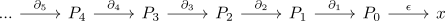
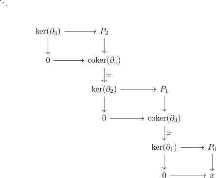
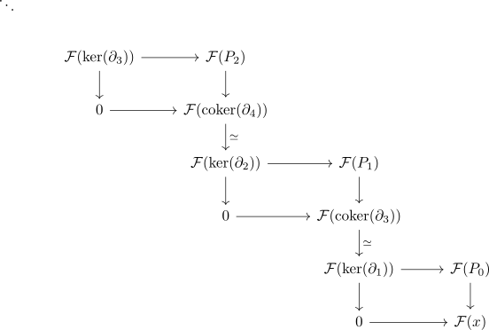
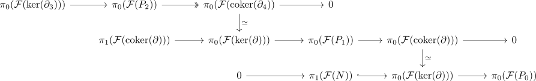
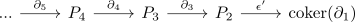

formula for left derived functors
Proposition
Let $f: \mathcal{A} \rightarrow \mathcal{B}$ be a right exact functor where $\mathcal{A}$ is - find adjectives -, $\mathcal{F}$ the left kan extension of $\mathcal{A} \hookrightarrow \mathrm{SpanWh}(\mathrm{An}(\mathcal{A})) \simeq \mathcal{D}^{\geq }(\mathcal{A})$. Then usual formula applies
Assume that $P_i$ are acyclic objects.
warning: very rough thoughts
- todo:
- find correct/necessary adjectives
- add indices for $\partial$ etc.
- argue last step: identify homology
Proof
Let

be a resolution.
case $n = 0$
We assume that $P_1,P_0$ are projective objects (so that $\mathcal{F}(P_i) = f(P_1)$ coincides by left kan extension along a fully faithful functor is fully faithful argument) Now let $P_1 \rightarrow P_0 \rightarrow \mathrm{cofib}$ be the cofiber sequence. Then $\pi_0(\mathrm{cofib}) \simeq x, \pi_1(\mathrm{cofib}) \simeq \mathrm{ker}(P_1 \rightarrow P_0)$. Observe that $\mathcal{F}$ is right t-exact functor (cf. right exact functor extends to right t-exact functor) and hence $\pi_0(\mathcal{F}(\mathrm{cofib})) \simeq \pi_0(\mathcal{F}(\tau_{\leq 0} \mathrm{cofib})) \simeq \pi_0(\mathcal{F}(x))$. (cf. right t-exact functor and truncation)
case $n = 1$, i.e., $\pi_1(\mathcal{F}(x))$
Recall that we have

And applying $\mathcal{F}(-)$ yields

Now the long exact sequence in the heart gives exact rows

where we use that $\mathcal{F}$ is right t-exact functor and $P_0$ is acyclic, so $\pi_1(\mathcal{F}(P_1)) = 0$.
We want to compute the kernel of $\pi_0(\mathcal{F}(\mathrm{ker}(\partial)) \rightarrow \pi_0(\mathcal{F}(P_0))$ , which is isomorphic to the kernel of $\pi_0(\mathcal{F}(\mathrm{coker}(\partial))) \rightarrow \pi_0(\mathcal{F}(P_0)))$. But $\pi_0(\mathcal{F}(\mathrm{coker}(\partial)))$ is isomorphic to the cokernel of $\pi_0(\mathcal{F}(\mathrm{ker}(\partial))) \rightarrow \pi_0(\mathcal{F}(P_1))$. But this cokernel is isomorphic to the cokernel of $\pi_0(\mathcal{F}(P_2)) \rightarrow \pi_0(\mathcal{F}(P_1))$ since the composition $\pi_0(\mathcal{F}(P_2)) \twoheadrightarrow \pi_0(\mathcal{F}(\mathrm{coker}(\partial_1))) \xrightarrow{\simeq} \pi_0(\mathcal{F}(\mathrm{ker}(\partial))) \rightarrow \pi_0(\mathcal{F}(P_1))$ since the first two maps are surjective.
So we want to compute (todo)
which is precisely the homology of the chain complex
todo:
- go through indices of
$n$ arbitrary.
Observe that the formula only gives us the homotopy groups (and in general not the actual object in the target). Now we also have a resolution

and an exact square
\begin{displaymath}
\begin{tikzcd}
\mathrm{coker}(\partial_3) \dar\simeq} & \\
\mathrm{ker}(\partial_1) \rar \dar & P_1 \dar \\
0 \rar & x
\end{tikzcd}
\end{displaymath}By short exact sequence in the heart is a bifiber sequence in a stable category we hence get a fiber sequence
and since $\mathcal{F}$ is exact, so is $\mathcal{F}(\mathrm{ker}(\partial_1)) \rightarrow \mathcal{F}(P_1) \rightarrow \mathcal{F}(x)$.
But $\pi_n(\mathcal{F}(P_1))$ vanishes for $n \geq 1$, so the long exact sequence in the heart shows $\pi_{n+1}(\mathcal{F}(x)) \simeq \pi_n(\mathcal{F}(\mathrm{ker}(\partial_1)))$.
Hence the case $n = 1$ computes $\pi_1(\mathcal{F}(\mathrm{ker}(\partial_1))) \simeq \pi_2(\mathcal{F}(x))$ and inductively $\pi_n(\mathcal{F}(x))$.